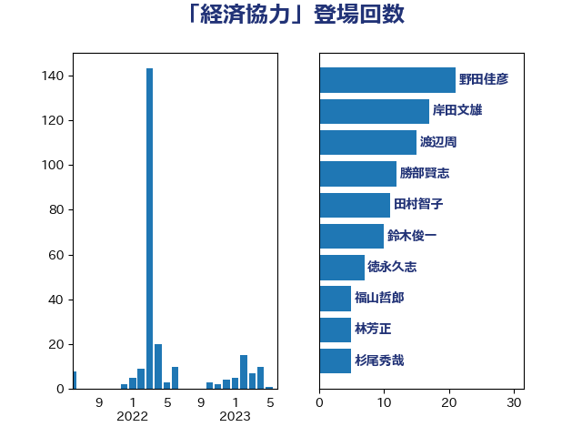

単語「経済協力」

| 渡辺周 | 立憲民主党 | 17 回 |
| 岸田文雄 | 自由民主党 | 15 回 |
| 茂木敏充 | 自由民主党 | 15 回 |
| 野田佳彦 | 立憲民主党 | 13 回 |
| あべ俊子 | 自由民主党 | 11 回 |
| 勝部賢志 | 立憲民主党 | 11 回 |
| 田村智子 | 日本共産党 | 11 回 |
| 井上哲士 | 日本共産党 | 9 回 |
| 徳永久志 | 立憲民主党 | 6 回 |
| 鈴木俊一 | 自由民主党 | 6 回 |
| 長峯誠 | 自由民主党 | 6 回 |
| 岩渕友 | 日本共産党 | 5 回 |
| 福山哲郎 | 立憲民主党 | 5 回 |
| 笠井亮 | 日本共産党 | 5 回 |
| 麻生太郎 | 自由民主党 | 5 回 |
| 山東昭子 | 自由民主党 | 4 回 |
| 杉尾秀哉 | 立憲民主党 | 4 回 |
| 林芳正 | 自由民主党 | 4 回 |
| 菅義偉 | 自由民主党 | 4 回 |
| 落合貴之 | 立憲民主党 | 4 回 |
| 古賀之士 | 立憲民主党 | 3 回 |
| 小田原潔 | 自由民主党 | 3 回 |
| 山添拓 | 日本共産党 | 3 回 |
| 斉藤鉄夫 | 公明党 | 3 回 |
| 斎藤洋明 | 自由民主党 | 3 回 |
| 森本真治 | 立憲民主党 | 3 回 |
| 浅田均 | 日本維新の会 | 3 回 |
| 蓮舫 | 立憲民主党 | 3 回 |
| 佐藤茂樹 | 公明党 | 2 回 |
| 古屋範子 | 公明党 | 2 回 |
| 大塚耕平 | 国民民主党 | 2 回 |
| 太栄志 | 立憲民主党 | 2 回 |
| 枝野幸男 | 立憲民主党 | 2 回 |
| 櫻井周 | 立憲民主党 | 2 回 |
| 礒崎哲史 | 国民民主党 | 2 回 |
| 紙智子 | 日本共産党 | 2 回 |
| 萩生田光一 | 自由民主党 | 2 回 |
| 藤岡隆雄 | 立憲民主党 | 2 回 |
| 西村智奈美 | 立憲民主党 | 2 回 |
| 辻清人 | 自由民主党 | 2 回 |
| 鈴木宗男 | 日本維新の会 | 2 回 |
| 長浜博行 | 無所属 | 2 回 |
| ながえ孝子 | 無所属 | 1 回 |
| 中谷一馬 | 立憲民主党 | 1 回 |
| 中谷真一 | 自由民主党 | 1 回 |
| 伊東良孝 | 自由民主党 | 1 回 |
| 伊藤孝恵 | 国民民主党 | 1 回 |
| 伊藤渉 | 公明党 | 1 回 |
| 佐藤啓 | 自由民主党 | 1 回 |
| 加藤勝信 | 自由民主党 | 1 回 |
| 吉田忠智 | 立憲民主党 | 1 回 |
| 堀場幸子 | 日本維新の会 | 1 回 |
| 大塚拓 | 自由民主党 | 1 回 |
| 大石あきこ | れいわ新選組 | 1 回 |
| 岡本三成 | 公明党 | 1 回 |
| 有村治子 | 自由民主党 | 1 回 |
| 本村伸子 | 日本共産党 | 1 回 |
| 梶山弘志 | 自由民主党 | 1 回 |
| 玄葉光一郎 | 立憲民主党 | 1 回 |
| 田中健 | 国民民主党 | 1 回 |
| 石橋通宏 | 立憲民主党 | 1 回 |
| 鈴木敦 | 国民民主党 | 1 回 |
| 長島昭久 | 自由民主党 | 1 回 |
| 鷲尾英一郎 | 自由民主党 | 1 回 |